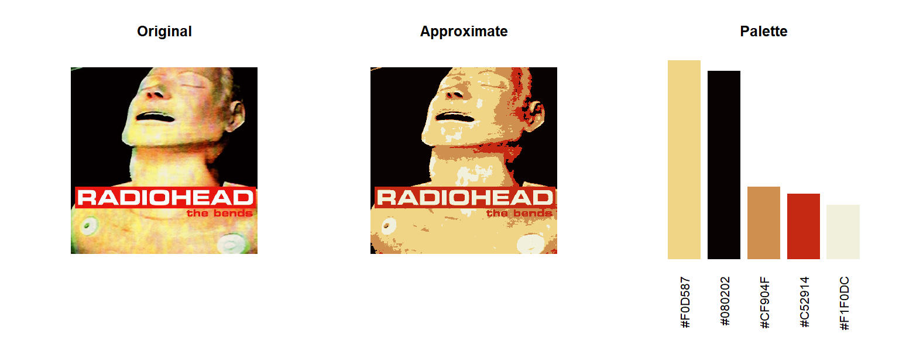

Define function to transform an image into tidy coordinate pairs with RGB values.
imTransform <- function(img){
i <- readJPEG(img)
dim_x <- dim(i)[1]
dim_y <- dim(i)[2]
df <-
melt(i) %>%
spread(Var3, value) %>%
rename(red="1", green="2", blue="3") %>%
mutate(Var1 = -Var1 + dim_y) %>%
rename(x=Var2, y=Var1) %>%
mutate(hex = pmap_chr(list(red, green, blue), rgb))
df
}im_df <- imTransform(system.file("extdata/album_covers", "the_bends.jpg", package = "inRainbows"))
head(im_df)
#> y x red green blue hex
#> 1 599 1 0.07450980 0.2000000 0.1098039 #13331C
#> 2 599 2 0.07843137 0.2039216 0.1098039 #14341C
#> 3 599 3 0.08235294 0.2117647 0.1058824 #15361B
#> 4 599 4 0.09019608 0.2196078 0.1058824 #17381B
#> 5 599 5 0.09803922 0.2274510 0.1058824 #193A1B
#> 6 599 6 0.10588235 0.2392157 0.1098039 #1B3D1Cncols <- 5 # Number of palette colors
kMeans <- kmeans(im_df[c("red", "green", "blue")], ncols)Assign mean colours to all coordinate pairs
approxCol <- kMeans$centers[kMeans$cluster, ]par(mfrow=c(1,3))
plot(im_df$x, im_df$y, col=rgb(im_df[,3:5]),
asp = 1, pch=".", axes=F, xlab="", ylab="", main="Original")
plot(im_df$x, im_df$y, col=rgb(approxCol),
asp = 1, pch=".", axes=F, xlab="", ylab="", main="Approximate")
palette <- table(rgb(approxCol)) %>% sort(decreasing = T)
barplot(palette, col=names(palette), axes=F, border=NA, main="Palette", las=2)
imPalette <- function(img, ncol=5, my.seed=3, ...){
i <- readJPEG(img)
mname <- str_extract(img, "(?<=/)[^.]+")
dim_x <- dim(i)[1]
dim_y <- dim(i)[2]
df <-
melt(i) %>%
spread(Var3, value) %>%
rename(red="1", green="2", blue="3") %>%
mutate(Var1 = -Var1 + dim_y) %>%
rename(x=Var2, y=Var1) %>%
tbl_df()
df$hex <- df %>% select(red, green, blue) %>% pmap_chr(rgb)
# Run Kmeans
set.seed(my.seed)
kMeans <- kmeans(df[c("red", "green", "blue")], ncol, ...)
# Caluclate aproximate colours
approxCol <- kMeans$centers[kMeans$cluster, ]
# Plot
par(mfrow=c(1,3))
plot(df$x, df$y, col=rgb(df[,3:5]),
asp = 1, pch=".", axes=F, xlab="", ylab="", main="Original")
plot(df$x, df$y, col=rgb(approxCol),
asp = 1, pch=".", axes=F, xlab="", ylab="", main="Approximate")
palette <- table(rgb(approxCol)) %>% sort(decreasing = T)
barplot(palette, col=names(palette), axes=F, border=NA, main="Palette", las=2)
return(assign(x=mname, value = palette, envir = .GlobalEnv))
}